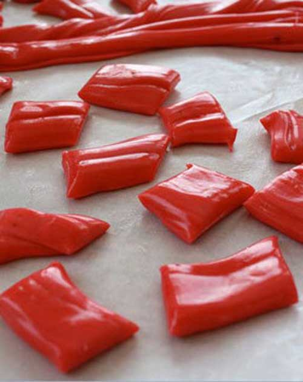

Taffy

Description
Homemade taffy is a fun activity for a rainy or snowy day. It was a highlight one year when we got adventurous and gave it a go. We aren’t big taffy eaters, but it was fun to pull and pretty tasty. Below is our great attempt at how to make homemade taffy!
Ingredients
- 2 cups sugar
- 2 Tbsp. cornstarch
- 1 cup corn syrup
- 3 Tbsp. half & half
- 3/4 cup water
- 2 Tbsp. butter
- 1 tsp. sea salt
Steps
- Butter large jelly roll pans before starting. Whisk up the cornstarch and sugar in a saucepan. Add the rest of the ingredients and stir well.
- Heat and stir over medium-high heat until the sugar dissolves. Cover and bring the mixture to a boil for 3 minutes. The candy mixture will foam and rise quite high in the pan. Watch carefully and stir down if it rises too close to the edge of the pan. Remove the lid and clip a candy thermometer to the side.
- Remove the lid and clip a candy thermometer to the side. Wash down the sides of the pan with a wet pastry brush to remove any crystallizing sugar.
- Turn the heat down to medium-high and allow it to boil undisturbed until the temperature reaches about 242°-246° (high altitude) or 252°-254° (sea level). This is a very critical part of making soft taffy and not hard candy.
- It is important to keep the heat to medium high heat, as it only takes seconds for the temperature of the candy to shoot up. Have lollipop sticks ready in case you accidentally boil the taffy syrup too long.
- You can test without a thermometer by skimming off a small bit of the candy syrup and drip onto a piece of parchment paper. Wait a few seconds and peel it off. Work with the drop for a few seconds, pulling and twisting it. If correct, the candy will stiffen a little, but will be very pliable. If it becomes brittle and breaks, the candy has been over-boiled. Using a thermometer usually brings good results if you aren’t confident.
- Once the candy reaches the right temperature, remove from heat. If making two flavors/colors pour one half of the taffy syrup into another pan and flavor/color separately. Quickly stir in 1/4-1 tsp. flavoring (depends on the flavor concentration), and coloring if desired.
- Pour each pan out onto the two prepared pans. Let cool until easy to handle.
- Pull the soft taffy until it is light and shiny in color, and becomes difficult to pull. As soon as it’s ready, be creative! Roll the taffy into long ropes and either twist the two colors together or cut pieces from each color.
- Make thin twisted ropes and roll the ropes to form taffy-pops. The children especially loved making these! The younger children can join in twisting the taffy shapes. You can also snip soft taffy into small pieces, cool and wrap individually.